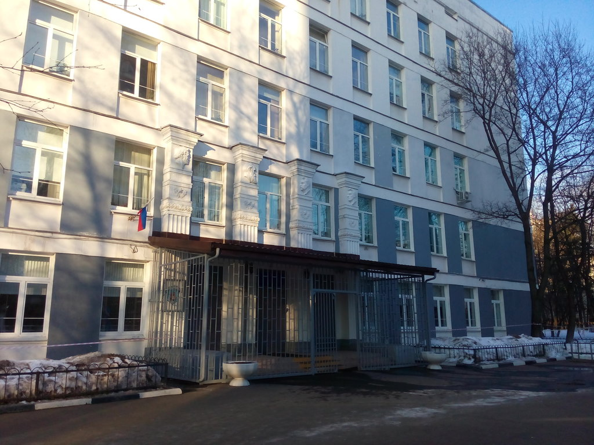

ГБОУ Школа №2200

Государственное бюджетное общеобразовательное учреждение города Москвы
"Школа № 2200". Это лучшее учебное заведение для Вашего ребенка. Здесь
работают лучшие учителя, которые преданы своему делу и с
ответственностью относятся к преподаванию.
Мой классный руководитель
Гончаренко Елена Александровна
Учитель математики
Адрес:
105215, город Москва, 11-я Парковая улица, дом 50
Станция метро:
Щелковская
Как нас найти:
Последний вагон из центра, далее вверх по лестнице, выход через
стеклянные двери налево, далее прямо до перекрёстка, поворачиваем
налево, прямо по ул. Константина Федина до конца, через дорогу, и Вы
на месте!